Experimental Characterisation of Drained Properties of Clay Till Yohanes Armediaz
- PI: Erika Tudisco (presenter)
- Co-Supervisors: Minna Karstunen, Per Lindh
2023-08-24_25
Agenda
- Background
- Method
- Results & Discussions
- Conclusions
BIG VIP-möte
Societal growth infrastructures and residential intensification
Background
- Societal growth infrastructures and residential intensification
- Clay till is the majority of the underlying soil in Skåne (Larsson, 2000)
- Defined as unsorted glacial sediment with clay content between 15% and 50%
- Lack of research for its drained properties
- Drained condition expected to be the governing condition for clay till with low clay content, between 15% and 17% (Hartlén, 1974)
(Larsson, 2000)
2025-01-28/29
BIG seminarium
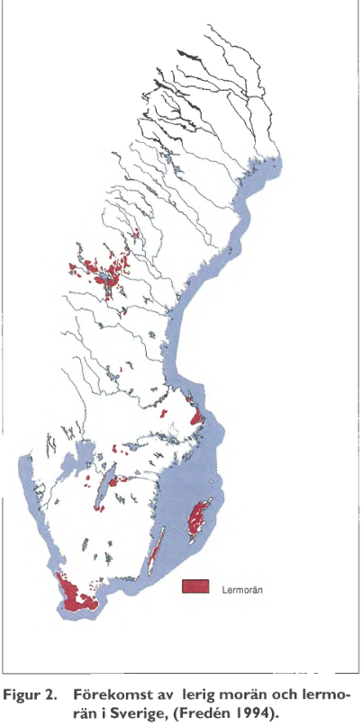
Drained parameters currently assumed in Swedish construction industry
Background
- Drained parameters currently assumed in Swedish construction industry
- c‘ = 0,1 cu
- ϕ‘ = 30 - 32°
- Previous studies (Hartlén, 1947; Jacobsen, 1970)
- Empirical relationships; they do not improve current assumptions (Larsson, 2001)
- Industry experience basic assumption underestimates the soil strength
- Investigation needed to better understand clay till behaviour in drained conditions
- Check the accuracy of the basic assumption
- Aims to improvise current/build new relationships
2025-01-28/29
BIG seminarium
Test site in Tornhill
Method
- Test site in Tornhill
- Clay till reference site (Dueck, 1995)
- Two types of clay till
- Baltic clay till
- Northeast clay till
0 m
3 m
6 m
23 m
Baltic Clay Till
Transition Layer
Northeast Clay Till
2025-01-28/29
BIG seminarium
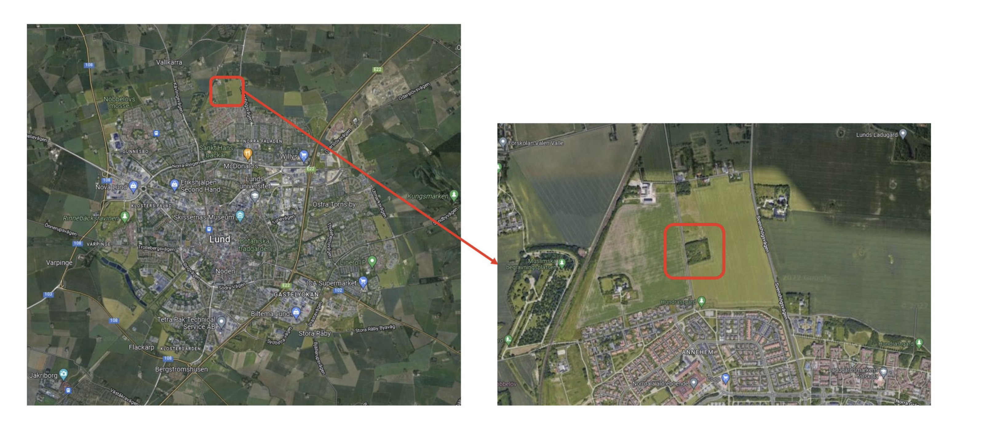
2023-08-24_25
| Property | Unit | Baltic Clay Till | Transition Layer | Northeast Clay Till |
|---|---|---|---|---|
| Bulk density | t/m3 | 2,11 | 2,17 | 2,27 |
| Natural water content | % | 17,0 | 15,8 | 12,4 |
| Liquid limit | % | 32,0 | 26,9 | 23,4 |
| Plastic limit | % | 16,3 | 16,3 | 13,3 |
| Degree of Saturation | % | 81,0 | 84,0 | 82,5 |
| Clay content | % | 35,0 | 25,1 | 21,1 |
BIG VIP-möte
Focusing on Baltic clay till
Method (Field)
- Focusing on Baltic clay till
- Sample collection
- Disturbed samples
- 1,5m depth
- Five CPTs conducted
- Up to 2m depth
- (recently up to 6m depth)
- Geophysics
- Seismic wave velocity
- Resistivity
2025-01-28/29
BIG seminarium
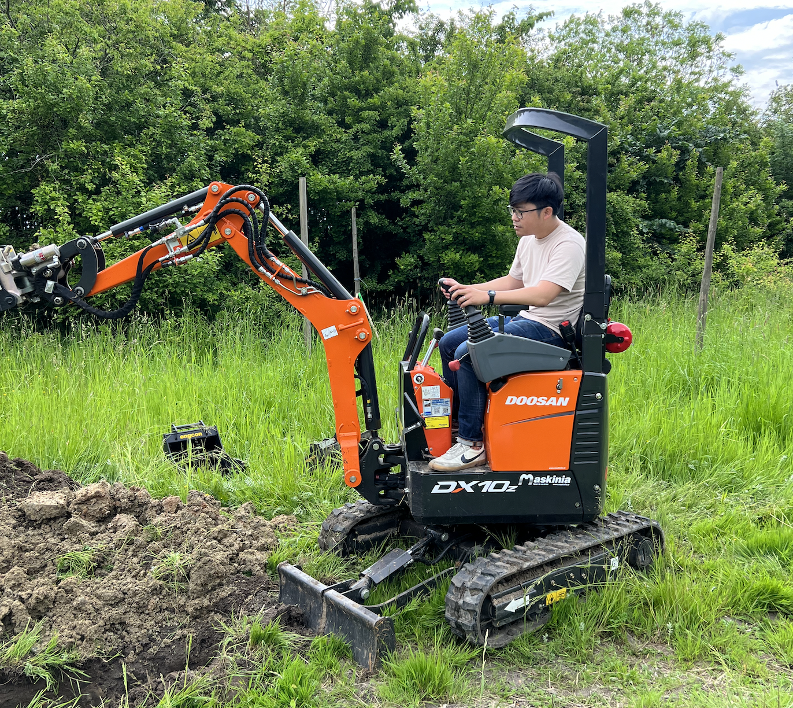
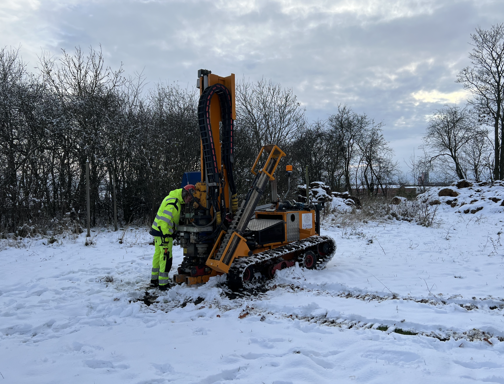
Consolidated drained triaxial tests
| ID | σ3′ (kPa) | Pre-mortem scan | Post-mortem scan |
|---|---|---|---|
| TC01 | 40 | ||
| TC02 | 40 | ✔ | ✔ |
| TC03 | 80 | ✔ | |
| TC04 | 20 | ✔ | ✔ |
| TC05 | 80 | ✔ | ✔ |
| TC06 | 20 | ✔ | ✔ |
Method (Lab)
- Consolidated drained triaxial tests
- 100mm diameter reconstituted samples
- Preconsolidated at mean effective stress of 500 kPa
- X-ray tomography
- Two scans
- Before shearing (pre-mortem)
- After failure (post-mortem)
- Pixel size: 65 microns
- Acquisition time: 50 minutes
2025-01-28/29
BIG seminarium
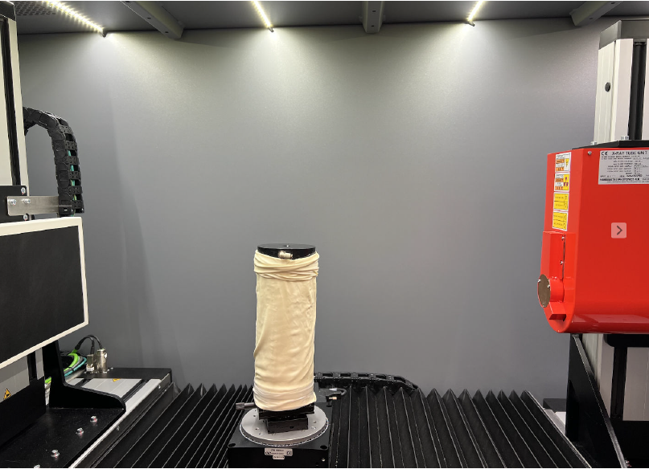
BIG seminarium
CPT
2025-01-28/29
Obtaining drained parameters
CD Triaxial Tests
- Obtaining drained parameters
- Mohr’s circle
- p’-q diagram
- ϕ’ = 51°
- c’ = 21,7 kPa
- Slope : d
- Intercept : m
- ϕ’ : arcsin(tan d)
- c’ : m/cos(ϕ’)
2025-01-28/29
BIG seminarium

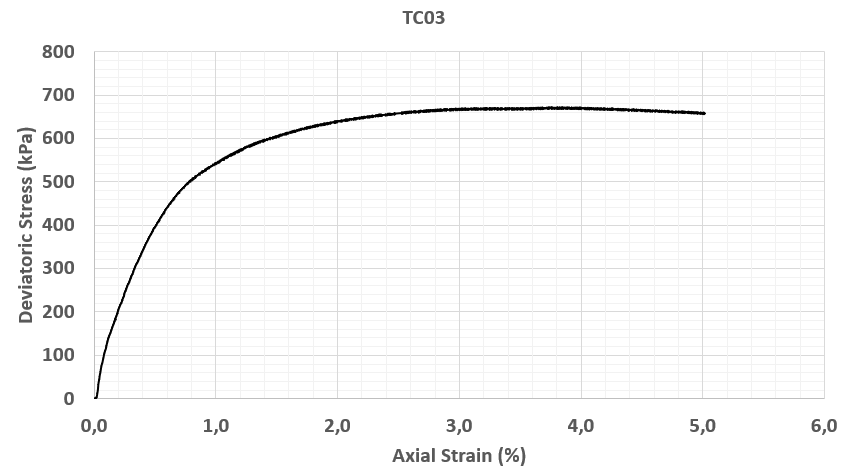
CD Triaxial Tests
- High ϕ’ obtained
- Omit TC03
- ϕ’ = 38°
- c’ = 57,3 kPa
2025-01-28/29
BIG seminarium
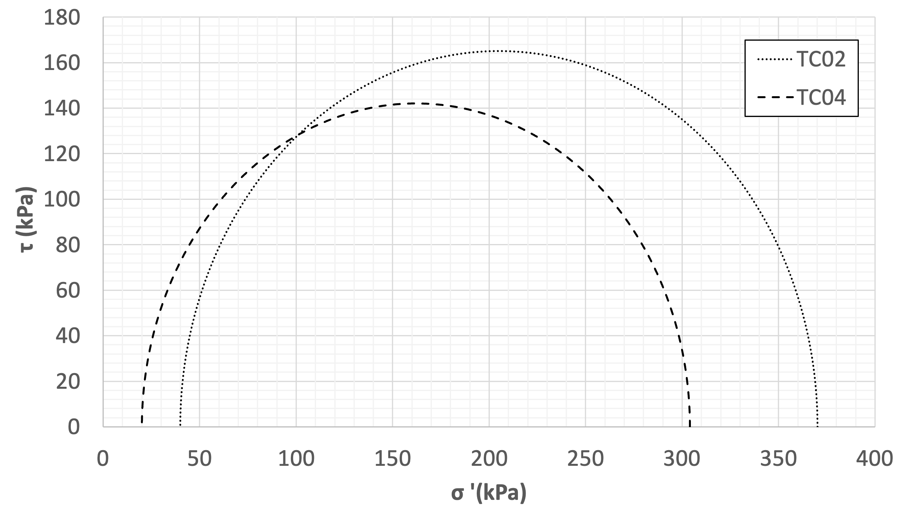
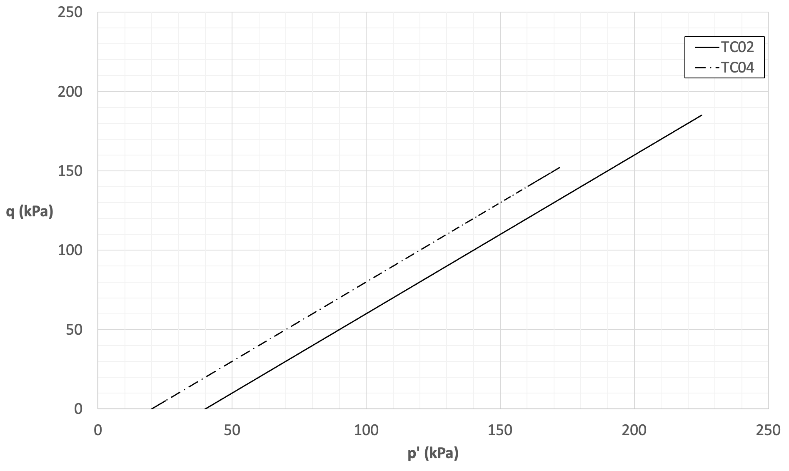
Evidence that basic assumption is over-conservative
| Basic assumption | 1st set | 2nd set | |
|---|---|---|---|
| c’ (kPa) | 35 | 21,7 | 57,3 |
| ϕ’ (°) | 30-32 | 51 | 38 |
Comparison of drained parameters
- Evidence that basic assumption is over-conservative
- More data required for a more accurate conclusion
2025-01-28/29
BIG seminarium
Two scans on each sample
X-ray Tomography
- Two scans on each sample
- Pre-mortem
- Post-mortem
- Analysis of microstructure
- Particles properties (size, density, distribution)
Deformation
2025-01-28/29
BIG seminarium

Beam hardening observation
- Beam hardening observation
- Real vs artifact
2023-08-24_25
BIG VIP-möte
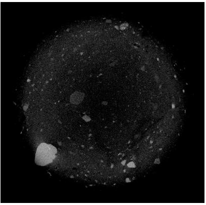
Digital Image Correlation (DIC)
Deformation
2023-08-24_25
BIG VIP-möte
15
- Continuum
- hypothesis
Vector displacement field
- Full 2D/3D strain tensor field
- and strain invariant
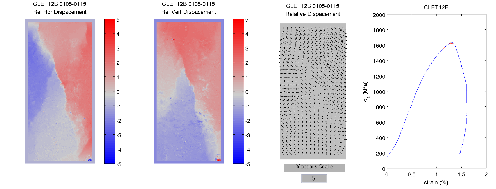
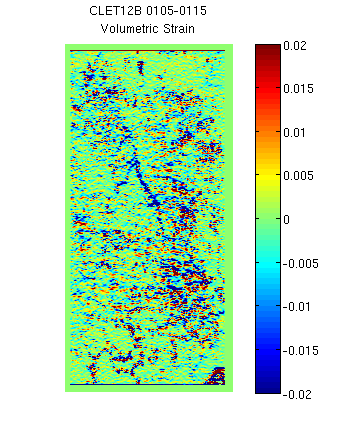
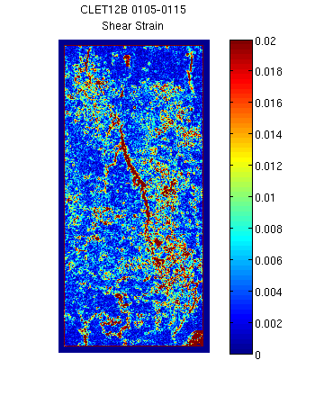
Analysis of shear and volumetric strain
Image Analysis - Deformation
- Analysis of shear and volumetric strain
- Complex shear band
- Dilation in the volumetric strain
Dilation
Compaction
Increasing shear strain
2025-01-28/29
BIG seminarium
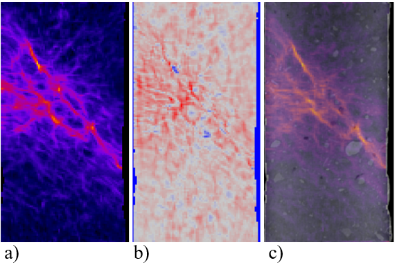


Image Analysis - Microstructure
2025-01-28/29
BIG seminarium
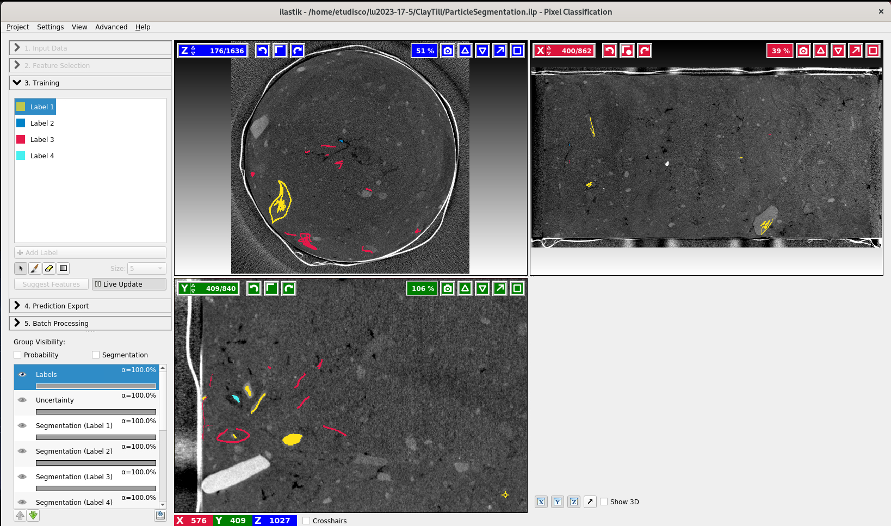
Image Analysis - Microstructure
2025-01-28/29
BIG seminarium
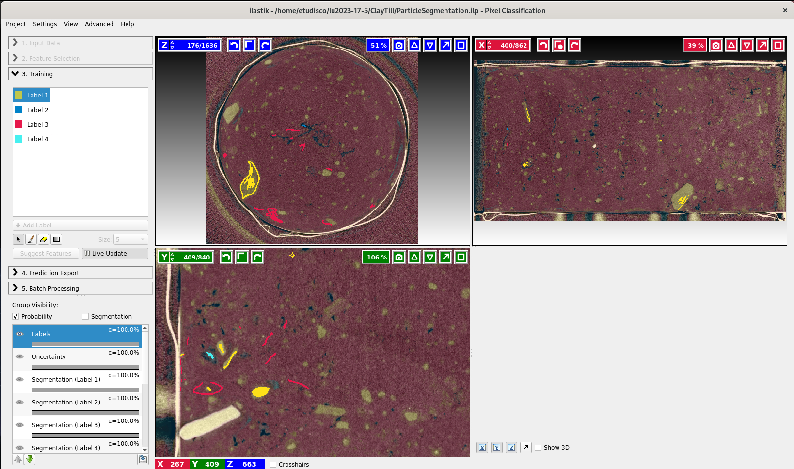
Image Analysis - Microstructure
2025-01-28/29
BIG seminarium
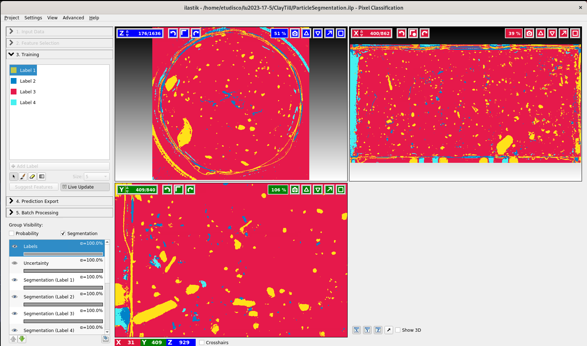
Image Analysis Microstructure
Labelled image
2025-01-28/29
BIG seminarium

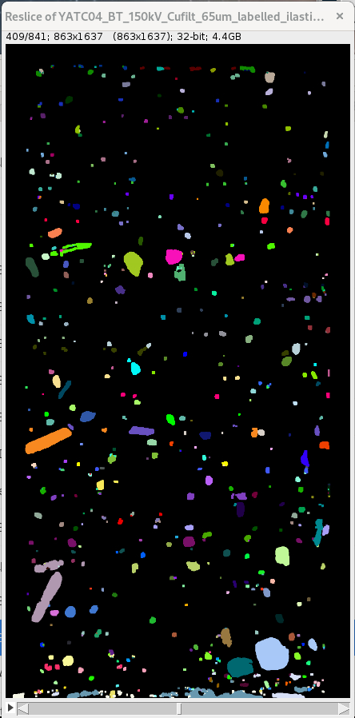
Image Analysis Microstructure
Labelled image
2025-01-28/29
BIG seminarium
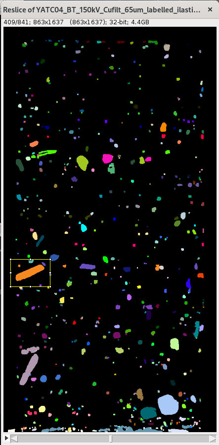

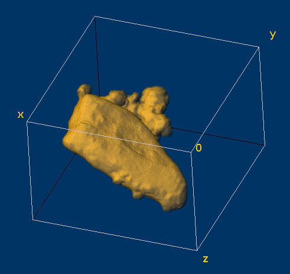
Image Analysis Microstructure
Labelled image
2025-01-28/29
BIG seminarium
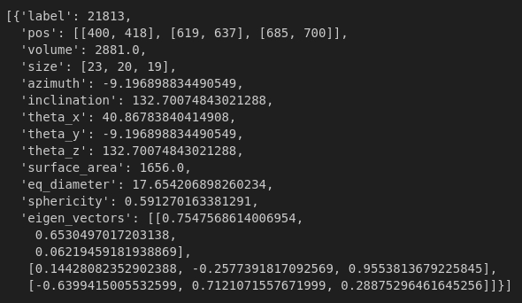
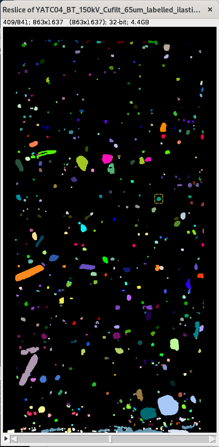
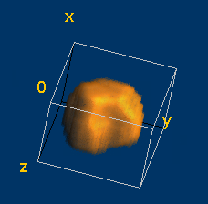
Image Analysis Microstructure
2025-01-28/29
BIG seminarium


Image Analysis Microstructure
2025-01-28/29
BIG seminarium
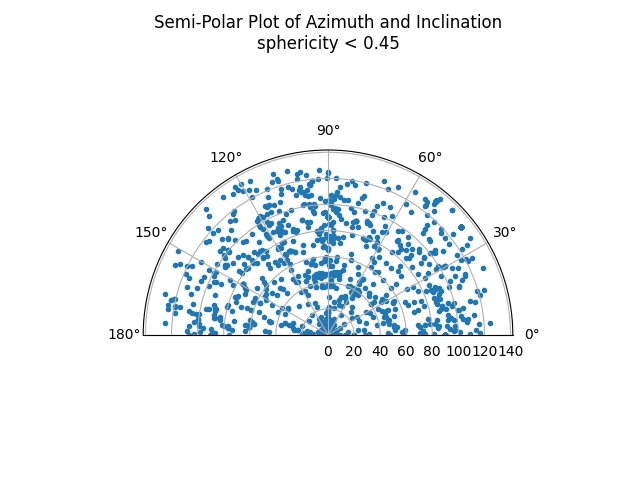

Experimental investigation on drained properties of clay till
Conclusions
- Experimental investigation on drained properties of clay till
- Signs showing basic assumption is over-conservative
- More tests required!
- Study on reconstituted vs undisturbed
- Inclusions affecting shearing mechanism and resistance
- Influence on shear band
- Can we link resistance to particle’s properties?
2025-01-28/29
BIG seminarium
CD Triaxial test
Future work
- CD Triaxial test
- Tornhill
- Ven
- X-ray tomography
- Pre-post mortem (DVC – failure mechanism)
- In-situ (influence of inclusion)
- Image analysis
- Systematic study of inlcusions
2025-01-28/29
BIG seminarium
Dueck, Ann. (1995). Reference site for clay till (p. 44). Lund University.
References
- Dueck, Ann. (1995). Reference site for clay till (p. 44). Lund University.
- Hartlén, J. (1974). Skånska moränlerors hållfasthets- och bärighetsegenskaper: [The geotechnical parameters of strength and bearing capacity of boulders clays from the southwest part of Sweden.
- Jacobsen, Moust. (1970). Strength and Deformation Properties of Preconsolidated Moraine Clay. 27, 21–45.
- Larsson, Rolf. (2000). Lermorän—En litteraturstudie (Varia 480; p. 73). Statens Geotekniska Institut.
- Larsson, Rolf. (2001). Investigations and Load Tests in Clay Till (No. 59; p. 169). Statens Geotekniska Institut.
2025-01-28/29
BIG seminarium